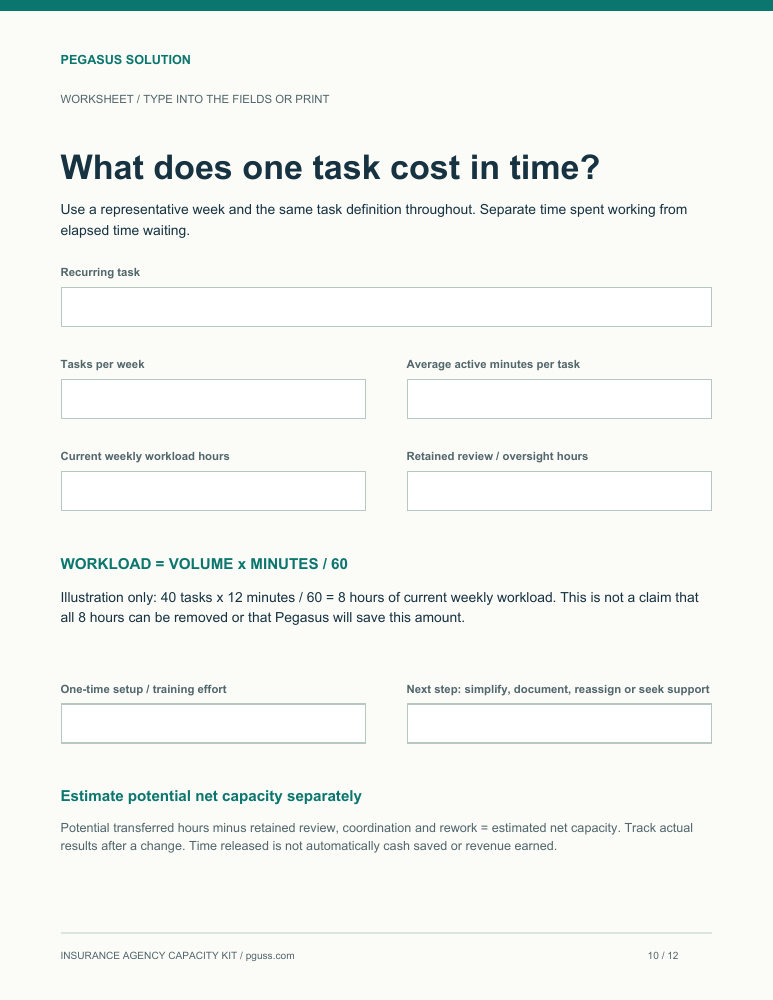
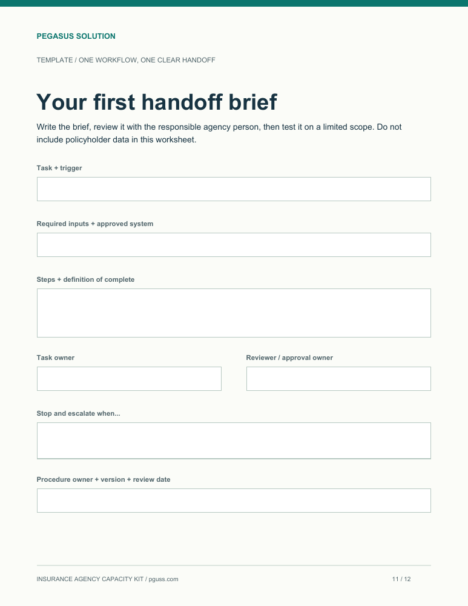

Spot the hidden friction
Seven practical checks for scattered requests, missing information, duplicate entry, unclear ownership and rework.
Spot the servicing tasks taking time away from your team, then decide what to simplify, document or delegate first.
Built for agency owners and operations managers with an active book and recurring servicing work.
Start with one recurring task. These three resources help you understand the work and make a more informed decision about support.
Seven practical checks for scattered requests, missing information, duplicate entry, unclear ownership and rework.

Use your own task volume and time estimates to understand the current workload. Separate that from potential time savings.

Define the inputs, owner, completion standard and review points before a task changes hands.
You may need a simpler process, clearer ownership or additional capacity. The kit helps you examine the workload before choosing the answer.
Get the free kitLook at a representative week and identify where work gets held up.
Keep judgement, approvals and permissions with the appropriate agency team members.
Agree on the instructions and review points, then test a limited scope.
Pegasus provides remote insurance operations support for US P&C agencies with recurring servicing needs.
We created this kit to help you make the workload visible and identify where a clearer process or additional support could help. Use it with your current team, or bring one workflow to a free 30-minute review with Chris after you download it.
The examples are educational. Your agency's procedures, permissions, review requirements and applicable licensing boundaries determine how any task should be handled.
Independent US P&C agency owners and operations managers, especially smaller teams managing an active book and recurring servicing work. It is an operations resource, not a guide to buying insurance.
A free 12-page PDF covering seven common time leaks, plus a fillable workload worksheet and task handoff brief inside the same PDF. You can save it, fill it in with a compatible PDF reader or print it.
No. The kit is yours to use without a call or purchase. The free capacity review is an optional next step if you want help applying it to one workflow.
No. It helps you measure your current workload and plan a change. Actual capacity depends on task scope, review effort, setup and how the work is performed.
We record your name and work email when you request the kit. The download opens immediately after a successful request. This form does not subscribe you to email marketing. See our privacy notice.
Get the guide, workload worksheet and handoff template.